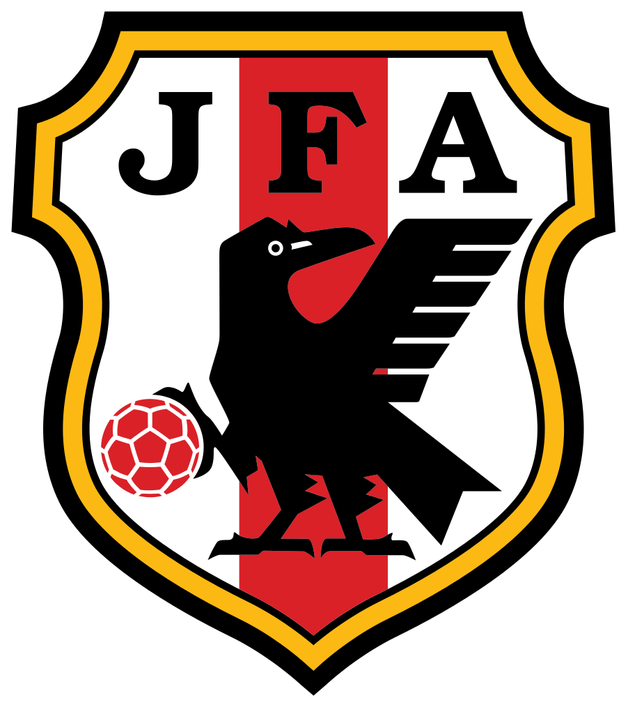

......
Russia as big as a nation as they are have failed to make an appearance in the FIFA world cup and have been presented a chance as the world cup will be hosted in Russia and they achieve automatic qualification. The question is will they be the first country to host the event and not reach the round of 16. They are yet to win an international trophy.
Saudi arabia have managed to qualify for four world-cups since they joined FIFA before the 1994 world cup which they did qualify for and reach the round of 16 which was the best performance they've had in their history. They qualified for the 3 world cups that followed 1994 but faied to pass the group stage on those occasions.
Japan in their rich history have qualified for the world-cup on five occasions. Their first appearnace was in 1998 and they hosted the event in 2002 with north Korea and have been in the round of sixteen twice and were present in the last world cup. They have won the asian cup four times and have proved themselves in their continent.
South Korea have been in 9 world cups which is the most by an asian team and the year they co-hosted with japan 2002 they came fourth. They are consistent as they have been in the last 8 world-cups. They are the country to suffer the worst defeat in the world cup 9 - 0 to hungary in 1954.
Australia is a nation have been playing football for a while but a lot of people think they just started because back in the 20th century, they only qualified once and got knocked out in the first round. Their best finish was in 2006 where they reached the round of 16 and they have qualified for the last three world cup which could stand as consistency.